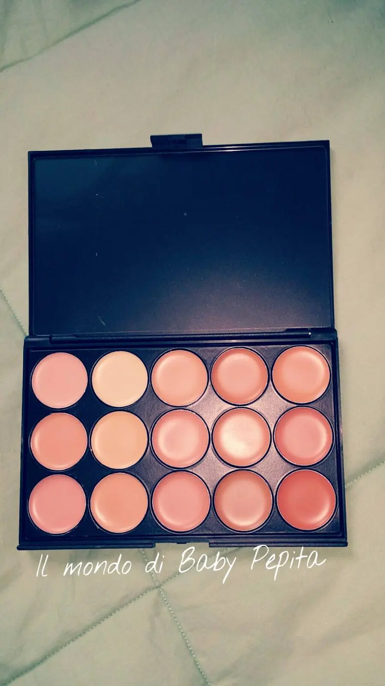

CrossCloud - palette correttori
BuongiornooooooAncora collaborazioni amazon . . ancora qui . .Oggi vi parlerò di un articolo makeupposo. . yuppiiiiii ahhahahebbene sì, un venditore mi ha gentilmente mandato direttamente lui a casa . . ( che per me è stata una sorpresa appena ho visto, non credevo in cotanta gentilezza), una PALETTE DI 15 CORRETTORI . .Il venditore è CrossCloud . .  Da tempo volevo provare i correttori in crema, poichè sono più propensa per i makeup in polvere. .
Da tempo volevo provare i correttori in crema, poichè sono più propensa per i makeup in polvere. .
Ecco la palette, come quelle che vedete in giro sul web e che possiedono anche il Make Up Artist per tutti i tipi di carnagione. .
Infatti la descrizione dice:
Perfetto per professionisti e principianti e adatto a tutti i tipi di pelle. Usando le tonalità più comunemente applicate garantire la migliore colore di pelle natrual. Ti permette di creare un trucco perfetto senza sforzo.
Ormai è diventato indispensabile sentirsi sempre al top, anche perchè i media ci tartassano di immagini di donne perfette e non vogliamo essere da meno. Per aiutarci in questo compito, c'è il make up che utilizziamo quotidianamente un pò tutte e ci permette di coprire anche degli inestetismi per farci apparire sempre perfette.
Ha davvero tante tonalità che va bene anche per creare i counturing, con una coprenza devo dire non elevatissima, ma abbastanza da poter coprire occhiaie e qualche inestetismo. .
Questa palette permette di mixare le 15 tonalità per creare anche chiaro-scuri sul viso, insomma da adattare a qualsiasi inestetismo della palle alle occhiaie più cupe e grige. .

Dunque buon prodotto, anche se io non amo colorare molto il viso e non amo cose cremose, ma per un makeup impeccabile questa palette fa la sua buona parte . . Arriva in questa custodia nera, semplicissima, senza marchi e senza un particolare packaging . . molto resiste e compatta questa palette, adatta anche per i viaggi. .Soddisfatta sia del rapporto di comunicazione con il venditore sia del prodotto. .